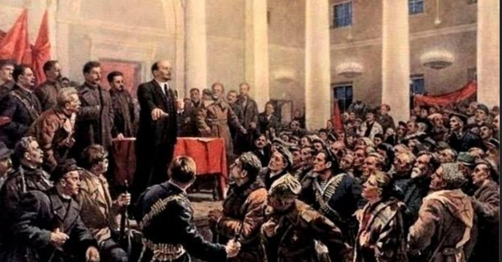
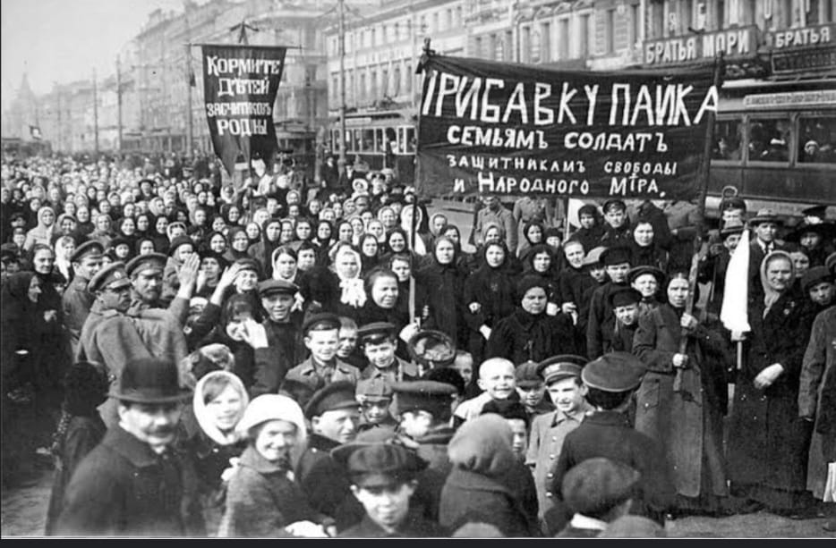
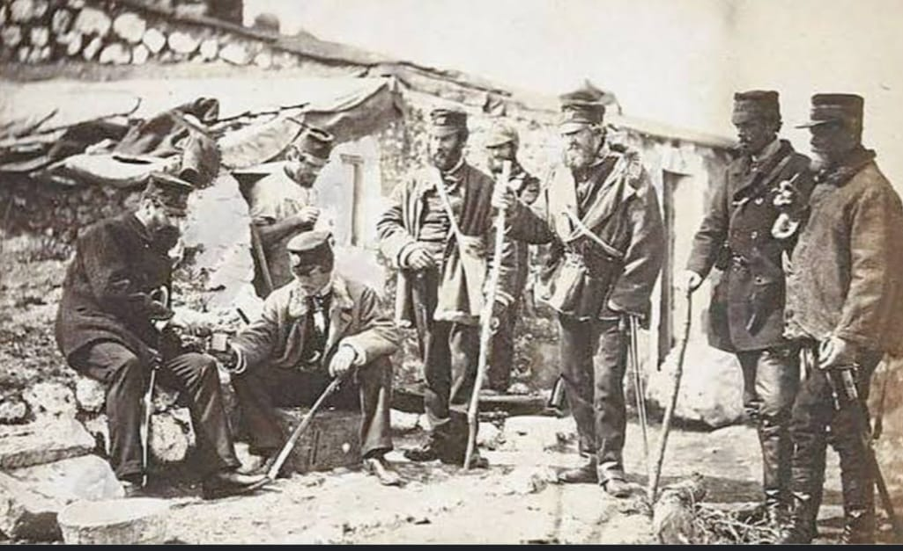
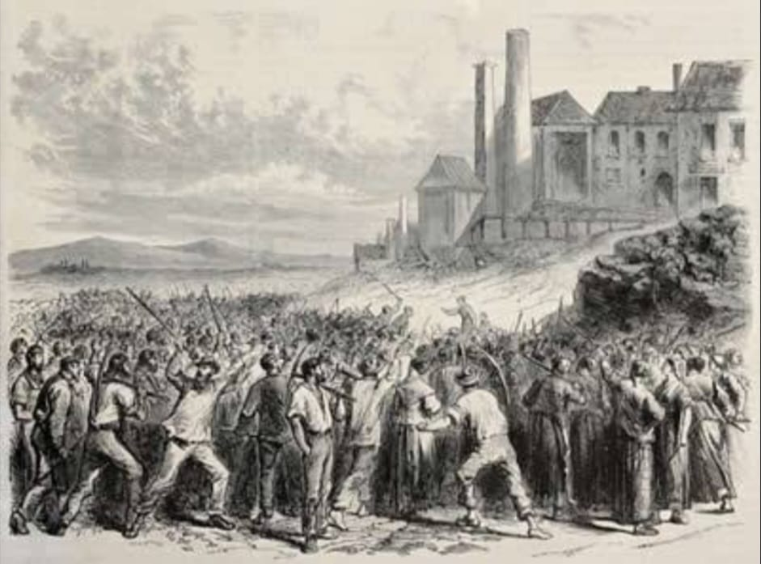
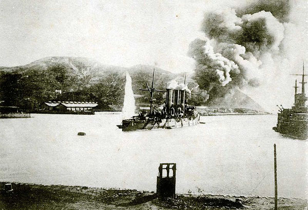
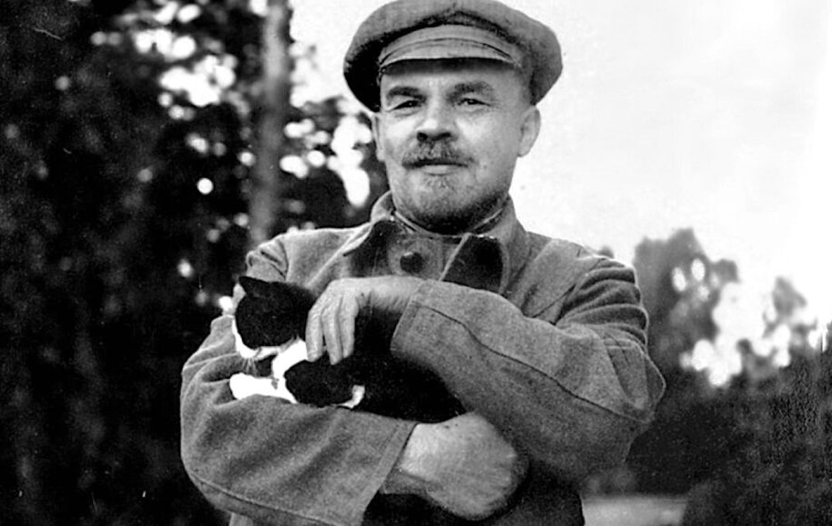
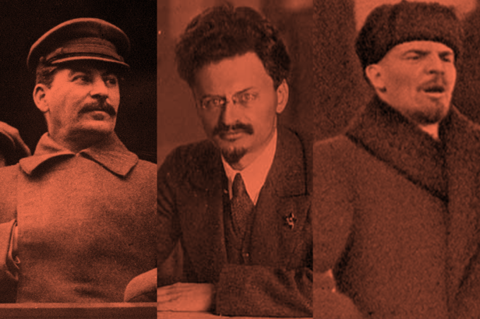
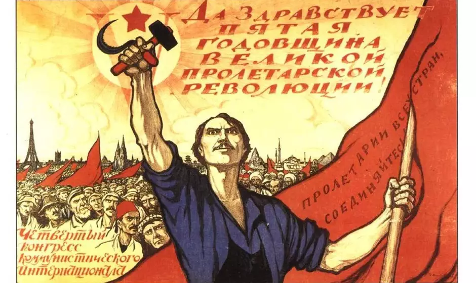

HomeSobreAntecedentes da RevoluçãoRevolução BolcheviqueCodigo-FonteExtraSUPER RAIMBOW!!ForuminationTema: Revolução RussaAntecedentes da RevoluçãoNa Rússia, entre 1721 a 1906, o sistema de governo foi uma monarquia absolutista, enquanto de 1907 a 1917, o sistema foi substituido por uma monarquia constitucional. As principais características são da monarquia russa eram os privilégios da nobreza, esta sendo a classe mais abastada no que se diz respeito a direitos, além do governo centralizado nas mãos do imperador. A agricultura era a base econômica, a Rússia era um país essencialmente agrário e carente de modernizações.

Na Europa, o capitalismo desenvolveu o Imperialismo no século XIX, e consolidou o modo de produção industrial como predominante em detrimento da produção manufatureira. Em virtude da Grande Depressão Capitalista no século XIX, ocorreram duas principais consequências na economia dos países industrializados: a primeira foi a falência das pequenas e médias empresas e a concentração do capital nas mãos de poucos capitalistas industriais. A segunda consequência da depressão foi a busca de mercados consumidores externos, ou seja, fora da Europa, nos continentes ainda não industrializados, como a Ásia e a África. Dado todos os problemas que emergiram junto ao capitalismo, Karl Marx e Friedrich Engels, desenvolveram a teoria socialista, partindo da análise crítica e científica do próprio capitalismo. A história do socialismo encontra suas origens na Revolução Francesa e nas mudanças trazidas pela Revolução Industrial.

Na teoria, o proletariado era um dos focos principais abordados. Para além da origem do termo no Império Romano Antigo, pode-se encontrar a origem do proletariado ainda na Idade Média entre as pessoas pobres e exploradas pelo sistema da época. Ainda no período de transição feudal para a formação de Estados Nacionais, as classes sociais vigentes não sofreram manutenção, isto é, pobres continuaram pobres, e ricos continuaram ricos. Com a ascensão da burguesia e o crescimento das cidades, entre os séculos XVIII e XIX, muitos camponeses abandonaram a difícil vida no campo para tentar um emprego na cidade. Assim nasce o proletariado. Com a revolução industrial, a Rússia Sofreu pequenos avanços industriais no século XIX, mas mesmo assim o Império Russo continuou a ser completamente agrário e arcaico. Essa pequena industrialização fez com que diversos camponeses saíssem do meio rural e viessem tentar a vida nos centros urbanos, após a abolição da servidão em 1861. Cabe dizer que o Estado russo era muito rigoroso com as novas industrializações, e procurava sempre estatiza-las.

No inicio do século XX, o Império Russo ainda era imenso constituído e por diferentes povos com diversas línguas e tradições diferentes. Governada por um Czar, Nicolau II, um imperador que contava com poderes absolutos e se dizia governante por vontade de Deus. O campesinato procurava por melhores condições de trabalho e de vida, mas esse povo fruto da miserabilidade agrária acabou sofrendo nos centros urbanos, com a carga excessiva de trabalho, baixos salários, a fome e a marginalização. Nesse contexto a Rússia ainda era dependente financeiramente da Inglaterra e França. Estoura então na Rússia diversas greves e manifestações reivindicando melhores condições de trabalho, participação política e liberdade de expressão, uma vez que a Rússia czarista limitava até mesmo a imprensa. Em 9 de janeiro de 1905, no calendário juliano, aconteceu o massacre da população de São Petersburgo, em nome do imperador russo Nicolau II.

No inicio do século XX, o Império Russo ainda era imenso constituído e por diferentes povos com diversas línguas e tradições diferentes. Governada por um Czar, Nicolau II, um imperador que contava com poderes absolutos e se dizia governante por vontade de Deus. O campesinato procurava por melhores condições de trabalho e de vida, mas esse povo fruto da miserabilidade agrária acabou sofrendo nos centros urbanos, com a carga excessiva de trabalho, baixos salários, a fome e a marginalização. Nesse contexto a Rússia ainda era dependente financeiramente da Inglaterra e França. Estoura então na Rússia diversas greves e manifestações reivindicando melhores condições de trabalho, participação política e liberdade de expressão, uma vez que a Rússia czarista limitava até mesmo a imprensa. Em 9 de janeiro de 1905, no calendário juliano, aconteceu o massacre da população de São Petersburgo, em nome do imperador russo Nicolau II.

Revolução BolcheviqueFoi em 1917, com a erosão do czarismo na Rússia, que a Revolução Bolchevique começou a tomar forma. O povo estava insatisfeito com o czar Nicolau II e passou a apoiar uma revolução liderada pelo Partido Comunista. Este, por sua vez, é chefiado por Vladimir Lenin. Segundo os bolcheviques, as mudanças feitas na Rússia não foram suficientes. Eles favorecem mudanças mais radicais, potencialmente quebrando o tradicionalismo russo que está sendo imposto. Também em 1917, com apoio popular, Lenin foi eleito chefe do Conselho de Comissários Políticos. E os bolcheviques começaram a assumir o controle da Revolução Russa. À frente da revolução, Lenin começou a lutar contra aqueles que eram contra seus interesses.

Durante este período, o czar Nicolau II foi morto, marcando a ascensão do comunismo na Rússia. E assim aconteceu a tão esperada luta de classes idealizada por Lênin, conhecida como a Revolução de Outubro de 1917. Originalmente, bolchevique significava "maioria" em russo. A palavra começou a ser usada no início do século 20 para se referir aos membros mais radicais do Partido Operário Social Democrata Russo (PORSDP). O partido se opôs ao regime de Nicolau II na Rússia. Os bolcheviques apoiaram uma mudança radical na Rússia, a queda do czarismo e a ditadura do proletariado, através da revolução comunista. Eles também argumentaram que o governo deveria ser formado por um sindicato de camponeses e trabalhadores russos. Sob a liderança de Lenin, os bolcheviques assumiram o comando político da Rússia em 1917, após a Revolução Russa. Eles usaram o lema: paz, terra, pão, liberdade e trabalho.

Lenin foi o principal líder revolucionário da revolução comunista na Rússia e teve um impacto na revolução bolchevique. Ele também é o líder do Partido Comunista. Ele espalhou sua ideologia refletida em Karl Marx, que acabou se espalhando por todo o mundo. Seus ideais são baseados principalmente na luta contra o populismo. No entanto, Lenin deixou a Rússia para estudar e estudar questões mais básicas, com a intenção de retornar e estabelecer o Partido Social Democrata Russo. Mas ao retornar, Lenin foi preso, falhando em realizar seu plano. Portanto, ele foi exilado na Sibéria por três anos. Em 1922, Vladimir Lenin sofreu seu primeiro derrame, que o enfraqueceu consideravelmente. Em 21 de janeiro de 1924, ele morreu após entrar em coma, aos 53 anos, entregando o poder da Rússia a Stalin.

VEJA TAMBEM!!O grupo de pesquisa que contribuiu para esta magnificiencia foi:Matheus Sales, Enzo Ferreira, Laura Cunha, Maria Luiza Mazzini, Maria Rigatto, Maria Reina, Camila Marchiolli, Rafaela Quederoli, Rhayssa, Matheis Vincigueta, Heytor, Gustavo, Luis felipe, Gabriel Zaloti, Fernando.Tudo foi desenvolvido por uma pessoa,espero q goste ;DFuturos trabalhos serão apresenados aqui !!